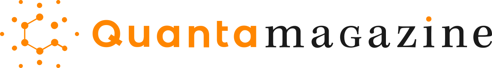

Stuff I'm reading
Here are a few websites I find incredibly insightful:
LessWrong
This one is all about how to think better. It is a community for logic, philosophy, and figuring out how to avoid being biased. lesswrong.com ↗
Wait but why
Really helpful for grasping big concepts. The author digs into every detail until the topic actually makes sense.
waitbutwhy.com ↗
Quanta magazine
Lots of interesting science article here
quantamagazine.org ↗I enjoy reading articles, blogs or books about science, mindset, productivity gig, business, psychology,philosophy.... Please let me know if you have any other websites or books that are worth checking out!